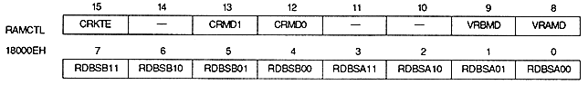

TV screen (interlace) mode | VCT9 | VCT8 | VCT7 | VCT6 | VCT5 | VCT4 | VCT3 | VCT2 | VCT1 | VCT0 |
Normal, Hi-Res (Non-Italy, Single Dense) | V8 | V7 | V6 | V5 | V4 | V3 | V2 | V1 | V0 | Disable |
Normal, high resolution, (double dense | V8 | V7 | V6 | V5 | V4 | V3 | V2 | V1 | V0 | 0: odd |
Dedicated Monitor | V9 | V8 | V7 | V6 | V5 | V4 | V3 | V2 | V1 | V0 |

Color RAM coefficient table enable bit : Color RAM coefficient table enable bit (CRKTE), bit 15
CRKTE | Processing |
0 | Store coefficient table in VRAM |
1 | Store coefficient table in color RAM |
CRMD1 | CRMD0 | Mode | Processing | ||||||||
0 | 0 | 0 | |||||||||
0 | 1 | 1 | |||||||||
1 | 0 | 2 | |||||||||
1 | 1 | − |